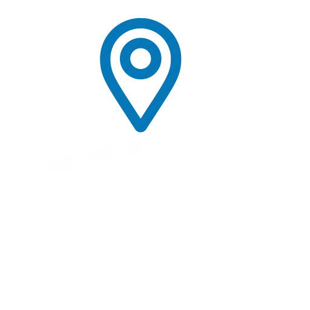

<div [class.overlay]="toggle" (click)="toggleHandler()"></div>
<nav class="admin-header header-top">
    <div class="header-text">
        <div class="header-nav" *ngIf="(isAdmin$ | async)">
            <a routerLink="/admin/panel/dashboard" routerLinkActive="active">
                <i class="fas fa-user-shield"></i> <span>Admin Panel</span>
            </a>
            <label for="btn"><i class="fas" [ngClass]="toggle ? 'fa-times' : 'fa-bars'" ></i></label>
        </div>
        <div class="header-nav" *ngIf="!(isAdmin$ | async)">
            <a [routerLink]="['/trip/list']" [queryParams]="{page: 1,limit:4}">
                
                
                
            </a>
            <label for="btn"><i class="fas fa-bars"></i></label>
        </div>
        <input id="btn" type="checkbox" (click)="toggleHandler()" [checked]="toggle">
        <div class="header-greet" *ngIf="!(isLogged$ | async) as isLogged" (click)="toggleHandler()">
            <a routerLink="/home" routerLinkActive="active"><i class="fas fa-home"></i> Home</a>
            <a [routerLink]="['/trip/list']" routerLinkActive="active" [queryParams]="{page: 1,limit:4}"><i
                    class="fas fa-route"></i> Shared
                Trips</a>
            <a routerLink="/user/login" routerLinkActive="active"><i class="fas fa-sign-in-alt"></i> Login</a>
            <a routerLink="/user/register" routerLinkActive="active"><i class="fas fa-user-plus"></i> Register</a>
        </div>
        <div class="header-greet" *ngIf="(isLogged$ | async) as isLogged" (click)="toggleHandler()">
            <a routerLink="/home" routerLinkActive="active"><i class="fas fa-home"></i> Home</a>
            <a [routerLink]="['/trip/list']" routerLinkActive="active" [queryParams]="{page: 1,limit:4}"><i
                    class="fas fa-route"></i> Shared
                Trips</a>
            <a routerLink="/trip/create" routerLinkActive="active"><i class="fas fa-plus-square" *ngIf="isLogged"></i>
                Offer Trip</a>
            <a routerLink="/user/profile" routerLinkActive="active" [queryParams]={page:1,limit:3}><i
                    class="fas fa-id-badge" *ngIf="isLogged"></i> Profile ( {{(user$|async)?.email}} )</a>
            <a (click)="logout()" class="logout-btn"><i class="fas fa-power-off" *ngIf="isLogged"></i> Logout</a>
        </div>
    </div>
</nav>